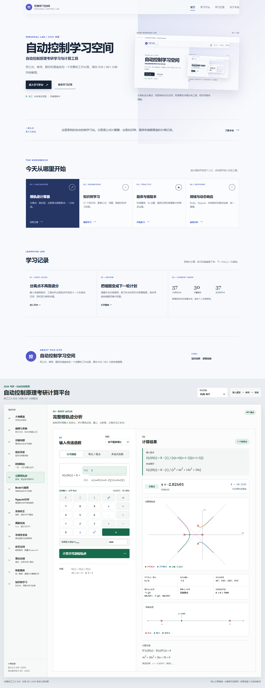

分离点不再靠通分
输入传递函数后，工具会列出候选点并筛选 K > 0 的有效区间，同时显示推导步骤。
进入平台 →PERSONAL LAB / 2026 考研
自动控制原理考研学习与计算工具
把公式、推导、题目和复盘放在一个安静的工作台里，面向 828 / 861 大纲持续整理。

从根轨迹分离点，到频域和状态空间，把难算的步骤交给工具，把时间留给理解。
THE WORKBENCH
按大纲拆开的四个入口，点击即可进入对应工具。
LEARNING LOG
把每次计算、练习和复盘留下来，下一次从上一次继续。
ABOUT THIS SITE
把公式、推导、题目和复盘放在一个安静的工作台里，面向 828 / 861 大纲持续整理。
2026 考研 · 自动控制原理
浙江工大 828 / 杭电 861 大纲驱动
| 章节 | 大纲知识点 | 学校 | 题型 | 入口 |
|---|
首列符号变化次数 = 右半平面根数
首列同号且无虚轴根时系统稳定
Kp = lim G(s)H(s)
Kv = lim sG(s)H(s)，Ka = lim s²G(s)H(s)
σ% · tp · tr · ts(2%) · ts(5%)
同时给出闭环极点和单位阶跃响应
|G(jωc)| = 1，γ = 180° + ∠G(jωc)
∠G(jωg) = −180°，h = −L(ωg)
01
K(s) = -D(s) / N(s)
dK / ds = 0，且 K > 0
02